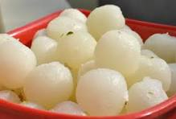

Ingredients
- 1 liter milk
- 2 tablespoons lemon juice or vinegar
- 1 cup sugar
- 1 cup water
- 1/2 teaspoon cardamom powder
Instructions
- Boil milk in a pan. Add lemon juice or vinegar to curdle the milk.
- Strain the curdled milk through a cheesecloth and rinse with cold water.
- Squeeze out excess water and knead the chenna (cottage cheese) until smooth.
- Shape the chenna into small balls.
- In a pan, combine sugar and water to make the syrup. Boil until sugar dissolves.
- Add the balls to the simmering syrup and cook for 15-20 minutes.
- Let the rasgullas cool in the syrup before serving.
Nutritional Information
Calories: 130 per piece
Protein: 4g
Carbohydrates: 22g
Fat: 3g